基于 LLM Wiki、OKF 与 Git 的Agent知识库：淘宝直播互动团队的AI Coding实践
来源：微信公众号 归档日期：2026-11-21 抓取状态：成功 原文字符：18842｜配图：27 张
摘要速览
- 淘宝直播互动团队在 AI 生码实践中构建的 Agent 知识库方案 LiveX Wiki。针对传统 RAG 向量知识库在复杂业务编码中存在的知识碎片化、相关性低等瓶颈，团队融合 LLM Wiki 编纂业务理解、OKF 思想组织知识表达、Git 管理版本迭代，按“域—场景—知识”三层结构将跨端跨仓的业务经验显式沉淀为机器可解析的上下文。该方案通过层次索引与 Agentic Search 结合实现按需消费与回源核验，并借助 LLM 和 Git 完成知识的自动更新与工程治理。评测表明，LiveX Wiki 端到端生码平均得分较无知识库提升 39.15%，较 RAG 方案提升 30.1%，线上仓库定位准确率从 60% 升至 90%，有效弥合了通用 Coding Agent 与真实业务需求间的认知鸿沟。
核心内容
（待补充）
可执行启发
（待补充）
我的想法
（待补充）
原文沉淀
目录

本文介绍了淘宝直播互动团队在 AI 生码实践中构建的 Agent 知识库方案 LiveX Wiki。针对传统 RAG 向量知识库在复杂业务编码中存在的知识碎片化、相关性低等瓶颈，团队融合 LLM Wiki 编纂业务理解、OKF 思想组织知识表达、Git 管理版本迭代，按“域—场景—知识”三层结构将跨端跨仓的业务经验显式沉淀为机器可解析的上下文。该方案通过层次索引与 Agentic Search 结合实现按需消费与回源核验，并借助 LLM 和 Git 完成知识的自动更新与工程治理。评测表明，LiveX Wiki 端到端生码平均得分较无知识库提升 39.15%，较 RAG 方案提升 30.1%，线上仓库定位准确率从 60% 升至 90%，有效弥合了通用 Coding Agent 与真实业务需求间的认知鸿沟。

写在前面
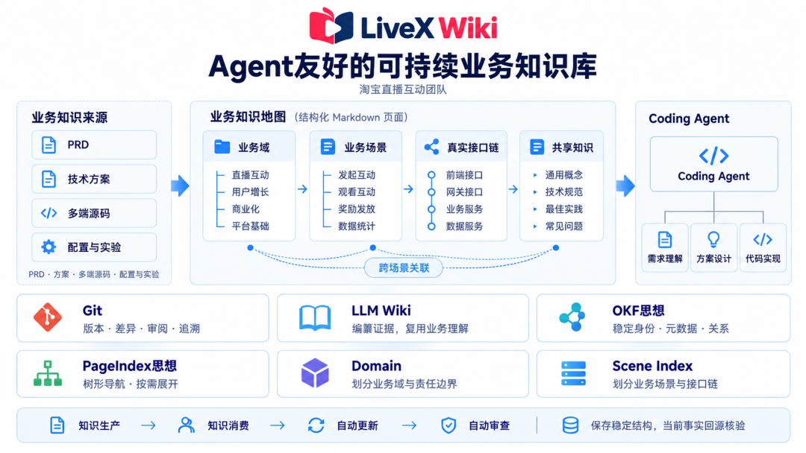
Coding Agent 在复杂业务中的落地，既取决于模型的编程能力，也取决于业务知识能否被准确供给。需求背后的兼容约束、跨端跨仓依赖与运行条件，分散在代码、文档和团队经验中，并随业务持续变化。将这些知识沉淀为可复用、可核验、可持续维护的上下文，是提高业务代码交付质量的基础。
淘宝直播互动团队早期通过 RAG 向量知识库补充业务资料，改善了相关知识的获取。但在实际任务中，召回片段仍需补齐场景边界、依赖关系和当前事实。这促使我们将建设重点从材料检索，进一步延伸到业务知识的结构化组织、按需消费与持续维护。
为此，我们构建了面向 Coding Agent 的 LiveX Wiki：用 LLM Wiki 编纂业务理解，借鉴 OKF 思想表达知识身份与关系，用 Git 管理版本、修订与受控发布。方案按“域—场景—知识”组织跨端、跨仓关系，将知识生产、消费、事实核验和维护统一到业务场景，使任务中的调查结果能够持续积累，并在后续任务中回源校验、复用。
在两批基于历史真实需求构造的端到端生码测评中，固定同批次的 Agent 运行时与工作流后，LiveX Wiki 的综合得分较无知识库基线平均相对提升约 39.15%，较团队既有 RAG 向量知识库分别提升约 30.1%。这些同批次评测得分的相对变化，初步支持了该方案对业务代码产出质量的改善作用。本文将结合技术选型、知识生命周期与效果验证，讨论其实现机制、适用边界与改进方向。
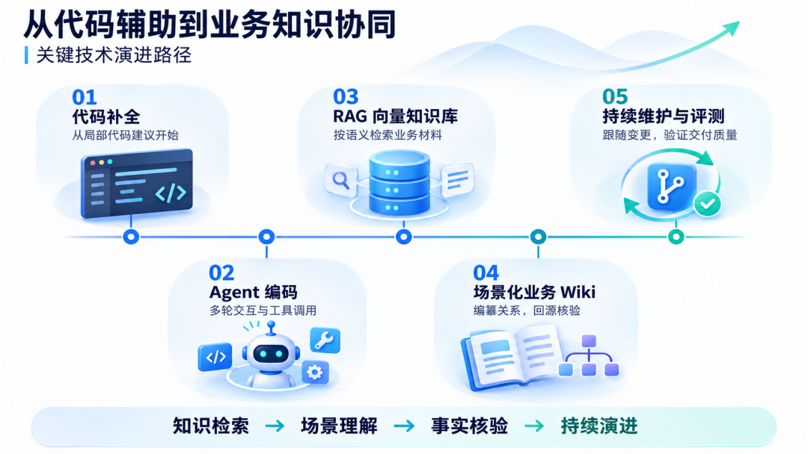
背景：Coding Agent 离写对业务代码有多远▐ 2.1 现象
** **
给通用 Coding Agent 一个明确的函数签名、一段局部逻辑或一组测试，它通常能够较快进入实现。但在复杂业务场景中，需求往往跨仓跨端，涉及到大量业务术语黑话，并可能关联复杂的配置与实验设计，这些东西只能依赖人去整理输入给AI。直接给通用 Coding Agent提供原始 prd 而无任何其他背景信息补充最终，最终产出的方案和代码往往是不可用的状态。
这反馈在团队AI效能上的直观表现就是AI代码采纳率低，对话轮次和返工频次高，需求代码交付周期提效不明显。
▐ 2.2 难点痛点
- 上下文完备度： 隐性规则、历史兼容要求和跨仓跨端依赖分散在代码、配置和人的经验里，难以靠需求与文档完整覆盖，导致代码满足了表面需求，却漏掉实际业务约束，Agent 和人之间有着一层天然的信息差与“认知gap”。
- 上下文准确性： Agent 缺少判断哪些信息有歧义、哪些结论需要查证，以及何时查代码、何时问人的可靠依据。猜着写会增加返工，频繁确认又会让协商成本抵消提效，因此供给上下文的准确度直接决定了Agent 代码生成能效。
▐ 2.3 RAG 向量知识库在业务编码中的局限
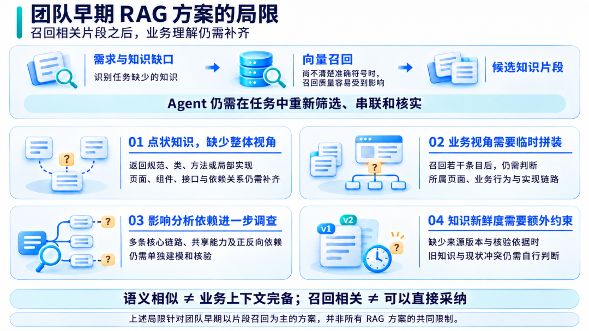
团队早期的 RAG 向量知识库，由知识检索 Skill 识别任务缺少的知识，再检索架构规范、平台接入方式，以及类、方法和字段等代码知识。Agent 判断每条结果的相关性和采纳情况；没有命中时，继续读取本地代码或补充业务资料，检索与使用结果进入观测记录。
我们统计了团队 2026 年 7～9 月的知识检索与使用记录，分别观察召回知识的采纳情况、相关性，以及具体知识需求（Need）主要由知识库支撑的比例。
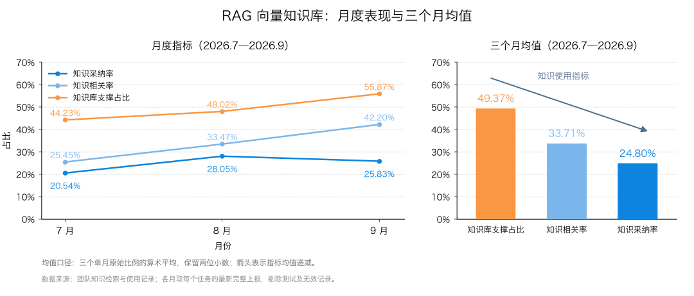
7～9 月，知识相关率由 25.45% 提升至 42.20%，知识库支撑占比由 44.23% 提升至 55.87%；知识采纳率则在 20.54%～28.05% 之间波动。在已上报任务中，知识库的支撑作用逐步增强，召回之后的筛选、关联与核验仍是关键环节。我们的优化重点也由扩大知识召回，转向按业务场景组织上下文，让已核实的边界、链路与约束能够被持续复用。RAG 可以扩大召回范围，但返回“语义相似”的材料，不等于已经取得“当前业务真正需要”的上下文。结合真实业务编码中的调查与使用过程，我们将当时方案在知识组织与消费上的局限归纳为四个方面：
- 知识是点状的，缺少整体视角： 返回内容多为规范、类、方法或局部实现，页面、组件、接口和依赖之间的整体关系需要额外补齐。
- 业务视角需要临时拼装： Agent 知道若干知识条目后，仍要判断这些条目属于哪个页面、哪项业务行为以及哪条实现链路。
- 影响分析依赖进一步调查： 检索可以找到候选内容，但页面背后的多条核心链路、共享能力及正反向依赖，需要单独建模和核验。
- 知识新鲜度需要额外约束： 检索结果若没有关联来源版本和核验依据，旧知识与现状冲突时，Agent 仍需自行判断。
这些问题来自当时的知识组织与消费方式，并不意味着所有 RAG 方案都有相同限制。对我们而言，问题已经从“能不能搜到知识”，转向“能不能按业务结构理解知识”。
▐ 2.4 从第一性原理讨论 Agent 需要什么样的知识库
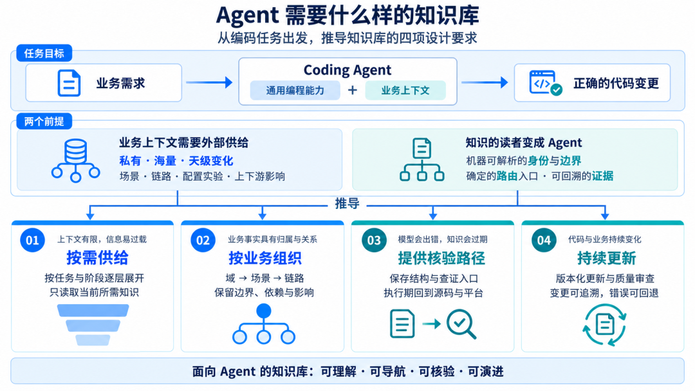
回到 Agent 本身，Coding Agent 的任务，是把一个业务需求变成一次正确的代码变更。 现阶段的模型依据具备了强大的通用编程能力，但具体业务事实仍需外部供给：需求落在哪个页面场景，沿哪条链路实现，受哪些配置和实验控制，会波及哪些上下游。这层上下文持续变化，也不适合每次全量塞入任务。当知识库的读者从人扩展到 Agent 后，需要回答的问题变成了如何提供机器可解析的身份与边界、确定的路由入口和可回溯的证据。把给人看的知识直接灌输给Agent，是很多现有知识库方案的隐性错位。
从这些前提出发，我们可以推导出 Agent 知识库设计的四条约束：
- 按需供给，而非全量堆给。 “装得下”不等于“理解得好”。无关信息、相似干扰和过期规则越多，筛选负担越重。知识库需要让 Agent 在每个阶段只取用此刻需要的层次。
- 按业务结构组织，而非按条目堆积。 业务事实有归属与关系，脱离结构的点状知识，意味着 Agent 要在任务内临时重建关系。
- 给可核验的路径，而非只给可引用的结论。 模型可能判断错误，知识也会过期；知识库保存结构与定位信息，当前事实在任务执行时回到原始来源确认。
- 有生命周期，随变更演进。 与代码变更脱钩的知识可能持续误导后续任务。知识需要像代码一样版本化：更新有迹可循，影响可审计，错误可回退。
四条约束合起来，把“知识库怎么建”归结为一个问题：知识应该以什么形态，被机器理解、按需获取、逐项核验、持续更新。 这也是后文审视知识库方案设计的统一标尺。
LiveX Wiki 的技术选型与设计取舍
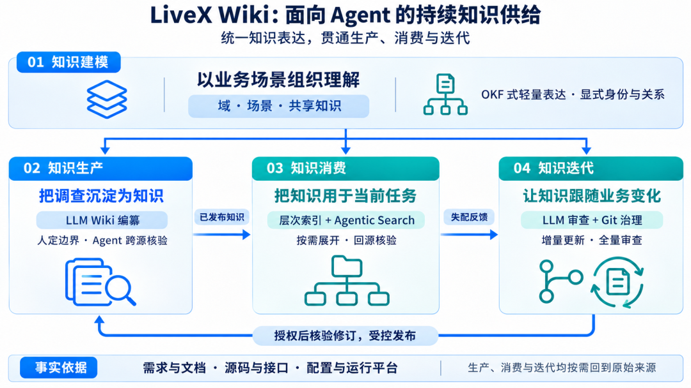
上一章的四条约束，最终指向同一个工程问题：如何把分散、变化的业务事实，持续转化为 Agent 可使用的上下文。我们沿知识从形成到复用的全过程，将选型拆为知识建模、知识生产、知识消费、知识迭代四个维度，分别回答“如何组织理解”“如何建立可信知识”“如何用于当前任务”“如何跟上业务变化”。选型既要考虑单次任务的交付质量，也要考虑调查成果能否复用，以及团队能否承担长期维护成本。
▐ 3.1 知识建模：以业务场景承载完整理解
我们首先要确定，什么知识值得作为一个整体留下来。自由文档便于记录，但身份、边界与引用往往依赖读者自行理解；按类、方法拆分的知识容易定位到代码，却难以直接表达跨端、跨仓的业务行为。Ontology 将对象、属性、关系与动作显式建模，提供了更强的语义约束，也意味着需要界定更大的建模与维护范围。
| 建模方式 | 解决的问题 | 边界与约束 |
|---|---|---|
| LLM Wiki 编纂 | 跨来源理解如何沉淀、关联并持续修订 | 需要确定编纂粒度，并保留来源与事实核验路径 |
| OKF 式轻量表达 | 知识如何可读、可解析、可迁移 | 项目仍需定义身份、字段和引用的一致性约束 |
| Ontology 语义建模 | 对象、属性、关系与动作如何保持一致语义 | 建模范围与维护成本需匹配当前知识导航任务 |
LiveX Wiki 选择以业务场景作为核心知识单元，以域明确归属，以共享知识承接复用。表达上借鉴 OKF 的轻量文件思想，用 Markdown 保存业务解释，用 YAML frontmatter 和引用声明身份、来源与依赖，使人能够审阅，程序能够检查，Agent 能够按结构读取。具体字段与消费规则由项目契约定义。
我们愿意在场景边界和关系准确性上投入，优先保证一项业务行为能够被完整理解、独立核验和明确归责。当前阶段并不需要把所有业务对象及操作都纳入统一运行模型；保留足够的语义结构，同时控制建模范围，更符合知识导航的目标。代价是场景划分仍需业务判断，无法仅靠文件目录或代码结构自动完成。
▐ 3.2 知识生产：让业务语义成为可复用的知识
人工整理能够解释业务意图，但跨仓调查与后续同步耗时；自动抽取便于汇集符号、实体与候选关系，业务边界和关系含义仍需确认。LLM Wiki 给我们的启发，是让模型将跨来源的理解编纂成持续维护的知识，使调查结果能够被后续任务复用。
基于这一思路，我们采用人工确定边界与责任、Agent 跨源调查和核验、程序检查结构的生产方式。负责人明确场景范围与权威来源，Agent 在固定版本和环境下，从业务入口追踪实现，再反查调用方与依赖，将已核实的关系编纂为场景知识；证据不足的内容单独记录，业务歧义交由负责人确认。
这项选择把一部分理解成本前置到知识生产，使后续任务能够复用已经调查过的路径。冷启是否值得投入，取决于这些成果能否持续服务于同一业务的后续变更。因此，我们以关键链路是否覆盖、关系是否有证据、知识是否有人负责来衡量生产质量。
▐ 3.3 知识消费：Agent自行检索，最终知识回到事实层
消费方案决定 Agent 从哪里开始、如何取得任务所需证据。向量 RAG 为相关材料提供检索入口；GraphRAG 和 LightRAG 将实体与关系引入检索；PageIndex 利用树形索引和模型推理定位内容。它们分别强化了语义匹配、关系检索和层次导航，但用于业务变更时，都需要进一步判断检索结果与当前实现的对应关系。
| 检索方案 | 实现方式 | 对业务编码任务的取舍 |
|---|---|---|
| RAG 向量检索 | 根据问题与材料的语义相似性召回候选内容 | 适合查找相关材料；场景边界、依赖关系与版本信息仍需组织 |
| GraphRAG、LightRAG | 在文本之外构建实体、关系等索引，并结合图结构检索 | 可以加强关系型问题的检索；抽取关系是否对应真实实现，仍需核验 |
| PageIndex | 构建文档树形索引，由模型沿结构定位内容 | 有利于保留文档层次；跨文档、跨仓的业务关系仍需另行表达 |
| Agentic Search | 根据任务逐步搜索、阅读并调整调查方向 | 能回到代码和文档确认细节；若每次从零调查，重复工作较多 |
我们选择层次索引与 Agentic Search 配合：先由程序提供域和场景的紧凑入口，再由 Agent 按需求选择场景、核心接口链和必要依赖，最后回到代码与运行平台核验当前事实。这里借鉴的是层次导航的思路，业务层次由场景模型定义；主动搜索则承担证据调查，沿任务需要继续追问和查证。
这一组合的价值，在于让已沉淀的业务理解缩小调查范围，又让实现判断接受当前事实的检验。我们更关注能否少做重复调查、准确确定变更范围，而不只看一次检索返回了多少相关片段。逐层读取和回源核验仍有调用成本，因此消费必须设置终止条件：证据齐备时停止，重复或未命中时报告缺口，避免无边界扩展。
▐ 3.4 知识迭代：把内容维护纳入工程治理
人工维护能够处理复杂判断，但持续更新依赖人的投入；索引更新能让新材料进入检索，却不能单独确认跨来源的业务关系是否仍然成立。LLM 可以协助发现变化、调查影响并修订内容，Git 则提供差异、评审和版本记录。两者分别处理知识内容与变更治理，组合后才能支撑持续维护。
| 维护方式 | 解决的问题 | 边界和局限 |
|---|---|---|
| 人工文档维护 | 人能够解释业务意图与复杂取舍 | 更新依赖人工触发，需明确责任和范围 |
| 数据变化后重建索引 | 使检索索引跟随来源更新 | 不自动等于跨来源业务关系已经核实 |
| LLM 编纂与回源审查 | 调查变化、检查遗漏并修订知识 | 需要来源权限、证据约束和质量检查 |
| Git 与评审流程 | 保存差异、版本、合入与回退记录 | 版本管理本身不能判断业务事实是否正确 |
LiveX Wiki 采用增量更新、定期全量审查与 Git 受控发布：沿源码变化定位受影响场景，回源核实后形成候选修订；定期重新检查事实与覆盖，发现仅跟踪已有链路难以暴露的遗漏。修订经过结构检查、质量门禁和适用的评审流程后发布，使每次变更都有依据、有版本，也能够追溯和回退。
我们认为，自动化最值得承担的是重复调查和一致性检查，业务歧义与知识准确性的责任仍要落实到维护人。选择这条路线，也就意味着接受持续审查与人工兜底的成本，并用后续任务的交付收益检验这项投入。
▐ 3.5 选型结论
四个维度围绕同一业务场景衔接：建模确定共同语言，生产建立可复用的调查成果，消费检验知识对当前任务是否成立，迭代处理变化与遗漏。我们的取舍是，把业务理解作为需要持续维护的工程产物，让它在反复使用与核验中积累价值。具体选型归纳如下：
| 维度 | 技术选型 | 核心职责 |
|---|---|---|
| 知识建模 | 场景模型 + OKF 式轻量表达 | 明确知识身份、边界、归属与依赖 |
| 知识生产 | LLM Wiki 编纂 + 人工定界与回源核验 | 将跨来源调查沉淀为有依据的场景知识 |
| 知识消费 | 层次索引 + Agentic Search | 按需定位和展开知识，核验当前事实 |
| 知识迭代 | LLM 增量更新与全量审查 + Git 治理 | 跟踪变化、检查遗漏并受控发布 |

LiveX Wiki 的知识建模
▐ 4.1 核心思路
- 按业务场景补齐上下文： 以“业务域—业务场景—共享知识”组织，围绕一个业务行为聚合入口、规则、依赖和维护责任，把隐性的经验显式表达出来，帮助 Agent 判断修改范围。
- 用知识地图指导查证与澄清： 跨需求、技术方案和源码调查，将已确认的业务关系、来源定位与待确认项分别沉淀。实现事实优先回代码、接口与配置核验；涉及业务意图、规则取舍或查证后仍无法消除的歧义，再向负责人澄清。待确认项不作为实现依据。
▐ 4.2 OKF 思想 + 域/场景/知识 建模：构建层次知识网络结构
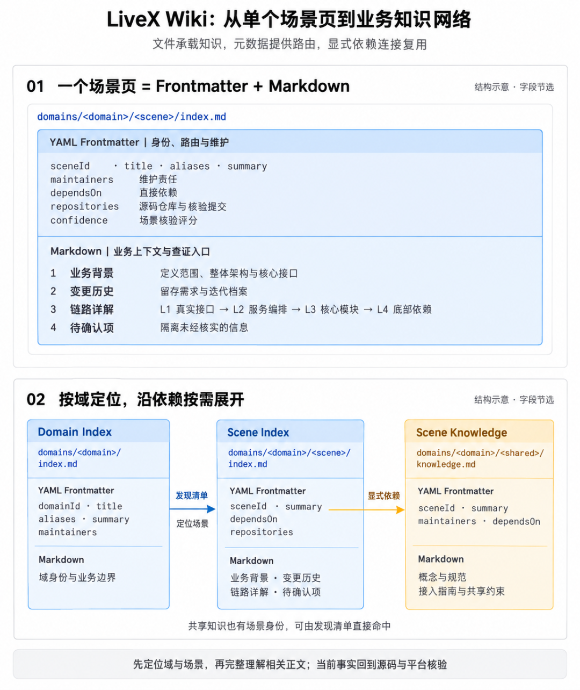
逻辑上，域、业务场景与共享知识形成三层理解结构；文件按域和场景组织，共享知识也有自己的场景身份，通过直接依赖被复用。
| 知识对象 | 负责表达 | 对应的工程约束 |
|---|---|---|
| 业务域 | 一组能力的职责、边界、维护人和场景入口 | 场景有唯一归属，先确认域边界再进入场景 |
| 业务场景 | 页面或系统职责的全景、核心接口链及查证路径 | 一个场景保存一份权威地图，源码变化按场景汇总 |
| 共享知识 | 平台接入、规范、共用概念和约束 | 独立维护，通过已核实的直接依赖引用 |
场景过大，每次变化都会扩大核验范围；场景过小，又会退化成需要临时拼装的碎片。页面聚合是确定业务范围的方法，真实接口链是落到技术事实的方法。 两者配合，才能既保持完整语义，又保留准确的实现入口。
业务域： 明确职责与归属，声明域身份与边界，承载第一次知识披露职责。
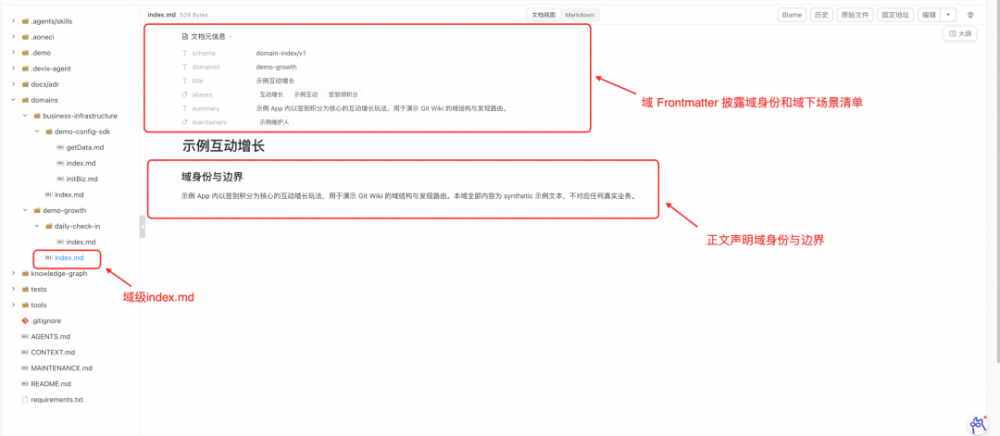
业务场景： 按“可独立理解、可明确归责、可单独核验”划分，场景内部沿 真实接口 → 服务编排 → 核心模块 → 底部依赖 建立查证路径，粒度控制到足以支持业务判断。
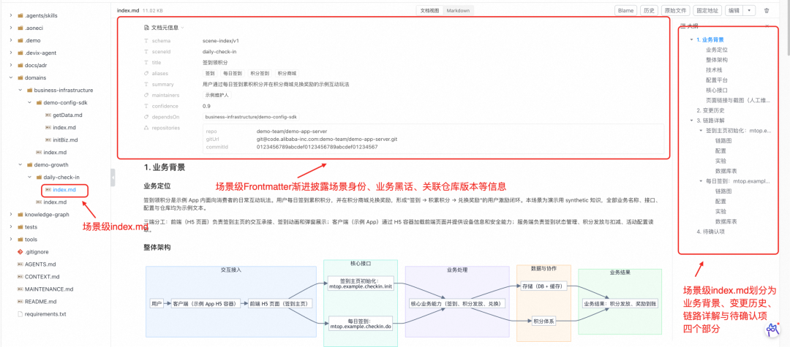
共享知识： 独立维护通用接入方式、概念和约束，由场景引用，避免被复制后各自过期。
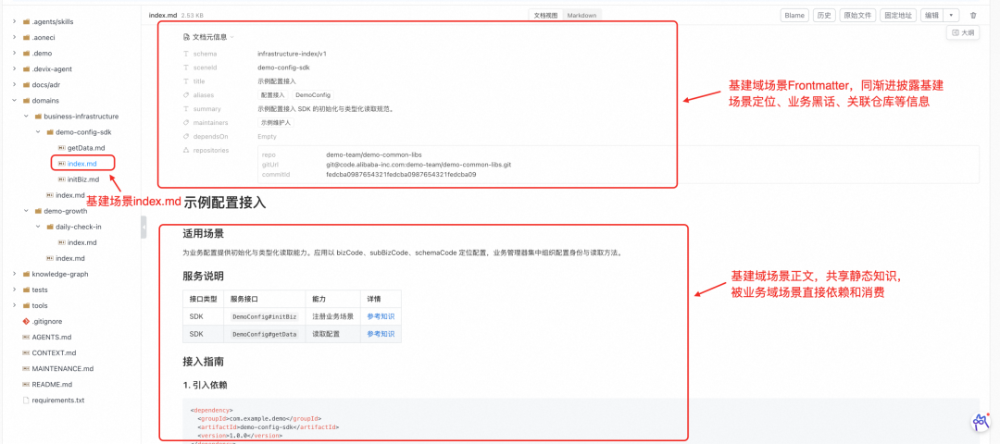
▐ 4.3 知识图谱：可视化层次知识网络与依赖关系
树提供确定的入口，图保留跨边界的关系。 “渐进披露”控制何时展开哪些范围；选中场景后仍需全文理解其边界，不能拿摘要替代上下文。依赖层次布局将领域、场景、知识纵向展开，按领域分列；虚线表达领域归属，实线表达直接依赖。一个共享能力被哪些场景引用、依赖是否跨越领域边界，可以沿连线检查。
归属回答“由谁维护”，依赖回答“变化后还要调查哪里”。 图中的层次表达知识组织关系，实际调用与变更影响仍需沿接口链核验。以下两图基于同一版本的知识图谱，保留节点类型、归属与依赖关系；域、场景及共享知识的名称与标识因数据敏感均已进行脱敏处理，以下分别展示有机布局与依赖层次布局。
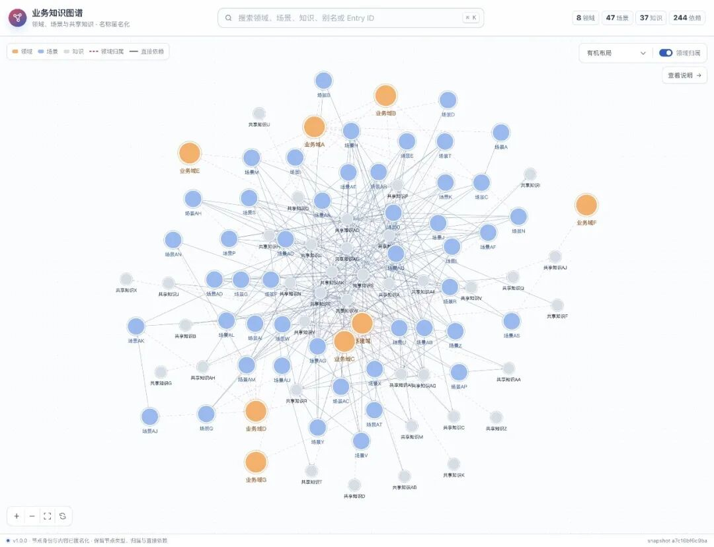
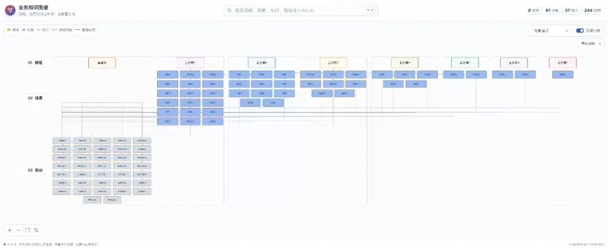

LiveX Wiki 的知识生命周期
我们围绕同一场景组织生产、消费和维护：生产形成可核验的知识，消费确认知识对当前任务是否成立，维护处理变化与遗漏。LLM 负责理解与核验，程序负责结构和范围，Git 负责版本与发布记录。 冷启、自动更新和全量审查共用生产契约与发布门禁；消费读取已发布知识，发现失配后报告，获得维护授权的流程才产生修订。
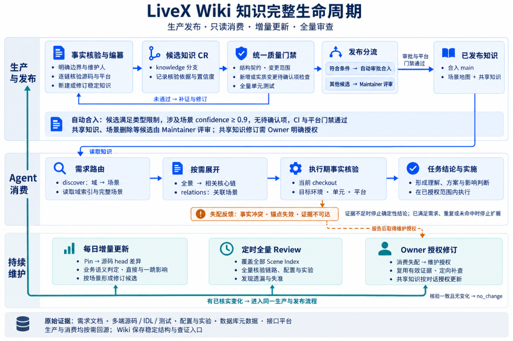
我们将LiveX Wiki 的完整知识生命周期划分为知识生产、知识消费、知识迭代三个部分，这些规则由仓库级 AGENTS.md 和 MAINTENANCE.md 文件统一承接。其中AGENTS.md 定义入口、读取顺序和行为边界；MAINTENANCE.md 定义生产、维护与发布流程，能力封装为统一的 Skill 对Agent提供。
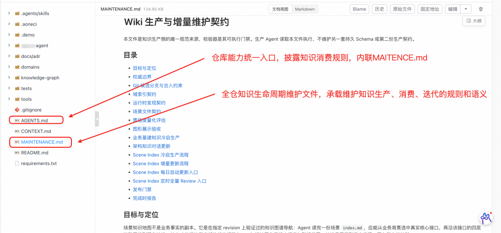
▐ 5.1 知识生产：自建冷启生产逻辑，模型跨源调查与人工定边界****
冷启最值得投入的人工工作，是明确场景边界和维护责任。 负责人提供需求、源码、原始prd、技术方案文档、来源与核验范围，Agent 负责跨仓调查、证据核对和知识编纂。若源码与权威材料仍无法解释业务归属，再交由负责人判断。
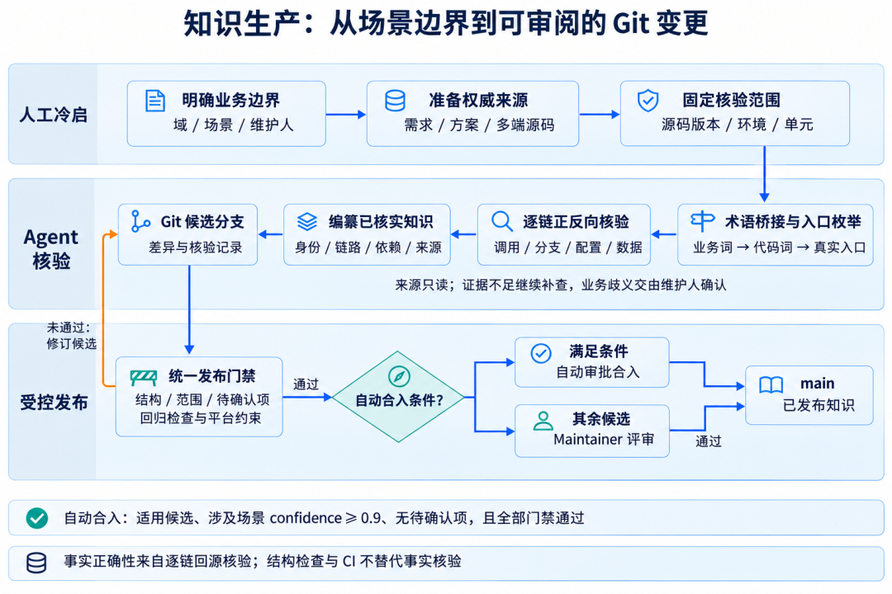
知识生产流程有四个关键动作：
- 固定来源与版本： 每个源码仓绑定本轮提交，明确配置的平台、环境与单元，避免调查中混用不同版本。
- 用两轮搜索跨越术语差异： 先用业务行为、页面文案和需求字段找候选，再用已确认的接口、类、字段、事件与配置标识反查，补齐第一轮没找到的端与模块。
- 从入口向下追，从消费者反向查： 枚举 API、消息、调度与扩展点，沿真实调用展开；再检查调用方、注册点和策略实现族，确认主链之外是否还有补偿或特殊分支。
- LLM 核实后编纂： 将已核实的关系写成接口链，同步配置、实验和数据库依赖；未闭合证据单独列出，再执行结构与发布检查。
以一个通用的异步任务场景为例，找到提交接口还不够。如果任务状态也由消息处理推进，需要解释另一条入口；若处理逻辑采用策略分发，还要核对选择条件与适用实现。找到一个实现只能证明它存在，正反向调查才帮助判断场景是否完整。
▐ 5.2 知识消费：渐进披露、按需展开、回源核验****
消费协议要同时回答“先读什么”和“读到哪里停止”。 我们让确定性程序生成发现清单，让 Agent 判断任务相关性；命中场景后，再沿真实来源核验。
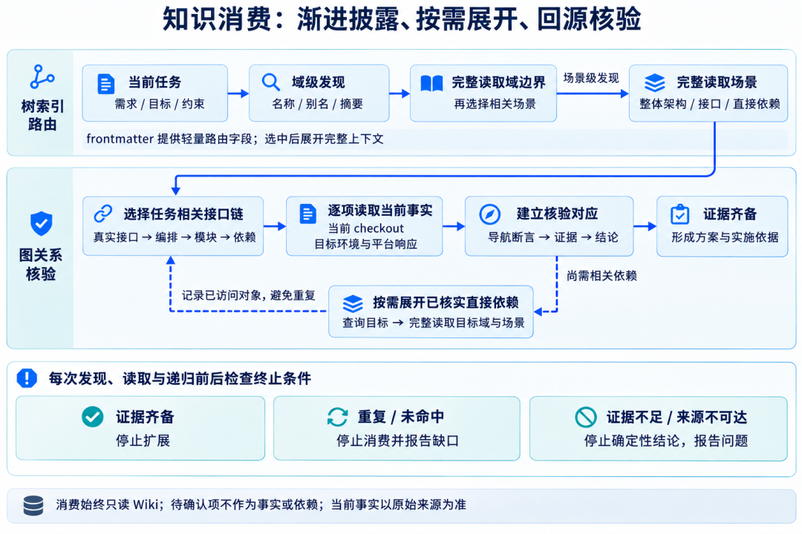
| 步骤 | 读取与处理 | 解决的问题 |
|---|---|---|
| 1.发现域 | 结构检查通过后，读取每域一行的名称、别名与摘要 | 以少量上下文选定业务范围 |
| 2.选择场景 | 展开候选域清单，完整读取域边界与命中场景 | 避免关键词片段脱离业务语义 |
| 3.按需求选链 | 从接口清单定位相关核心链，读取节点、边与控制项 | 把业务问题落到实现入口 |
| 4.展开必要依赖 | 查询已声明的直接依赖，按需读取目标域与场景 | 补齐共享知识，避免全图加载 |
| 5.回源核验 | 逐项建立“导航断言—当前事实—核验结论”对应关系 | 判断知识对当前任务是否成立 |
一次具体业务需求变更，应在当前代码里确认输入、拒绝分支与异常处理，在目标环境中确认控制项如何生效，再判断共享能力是否受影响。读到了知识，和核实了实现，是两个不同的完成条件。
消费过程维护已访问集合：证据齐备时停止；发生重复或未命中时结束扩展并报告缺口；来源不可达或定位符失效时，不把“查不到”推断成“没有影响”。同时保持知识只读，避免任务内推测直接变成共享事实。
▐ 5.3 知识迭代：LLM Wiki 与 Git，让知识像代码一样演进****
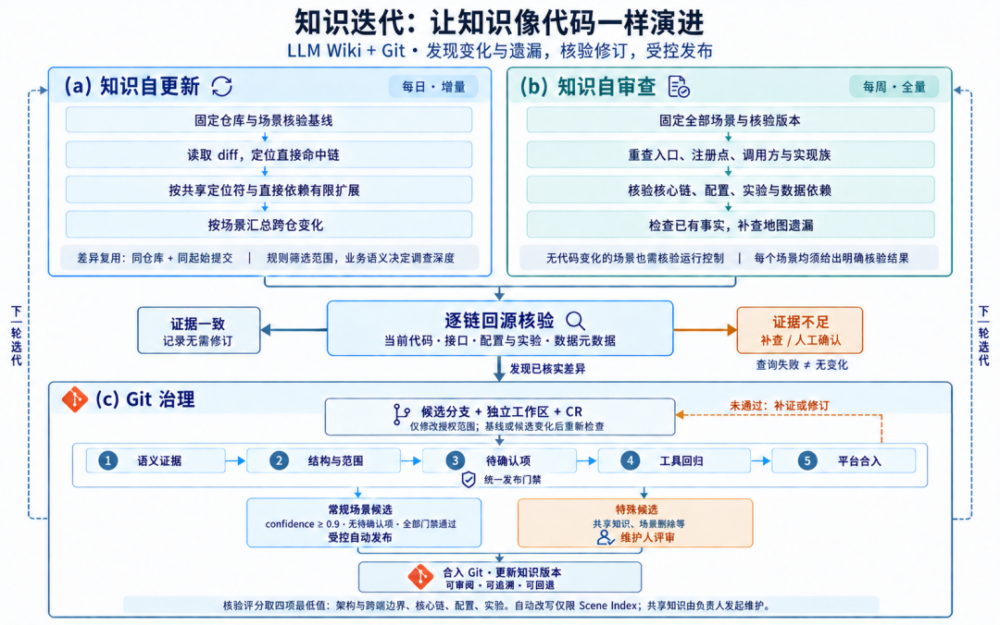
知识冷启建立了场景地图，持续迭代负责让它跟上业务变化。我们把这件事组织为知识自更新、知识自审查和 Git 治理：从代码变化定位需要修订的知识，定期回到原始来源检查事实与覆盖，所有修订再经过同一套候选评审和发布门禁。LLM 负责理解变化、核验证据并改写知识，Git 承载版本、差异与合入记录，让每次修订都能被检查和追溯。
- 知识自更新： 从场景登记的源码仓库与核验提交出发。固定目标分支的新提交后，调查两个版本之间的变化，再按场景汇总跨仓影响，把代码 diff 转化为需要重新核验的知识范围。最后将多个仓库的证据汇总为同一场景的一次候选修订，同步链路、配置与实验、数据库依赖和必要的源码基线。只有知识表达确实需要变化时才产生提交，随后进入统一的 Git 治理流程。
- 知识自审查： 定期回源，检查事实与覆盖。仅沿已有定位符追踪 diff，可能长期发现不了地图之外的链路。每轮审查先固定场景地图与核验版本，再沿两个方向展开：逐项回到源码和平台，核对已记录的接口、调用关系与底部依赖；重新枚举入口、注册点、调用方和策略实现，寻找遗漏。近期没有代码提交的场景也要检查，因为运行控制仍可能变化。
- Git 治理： 自更新与自审查都先形成候选，再由发布规则决定何时成为团队可消费的知识。每个场景的维护任务使用独立候选分支、工作区与变更评审，提交只包含授权范围内的修订。重试复用已有候选；主分支前进或候选提交改变时，重新同步并检查，确保最终合入的内容就是本轮完成核验的内容。

LiveX Wiki 的效果验证与改进方向
▐ 6.1 整体测评思路与基础能力建设
Agent 知识库的价值，最终要落到 Coding Agent 对业务交付的帮助。我们以历史真实需求为样本，围绕“量化收益、定位缺口、改进溯源”开展两类测评：端到端生码测评固定同批次的 Agent 运行时与工作流，对比无知识库、RAG 向量知识库和 LiveX Wiki 下的代码产出；需求路由测评逐层比对业务域、场景、仓库和核心链路，检查知识覆盖与定位情况。再沿执行轨迹追查失分环节，让指标同时服务于价值判断和改进优先级。
两类测评统一管理数据集、被测系统与测评器，记录输入、输出、运行条件和执行轨迹。数据集负责说明任务与预期结果，被测系统负责执行任务，测评器依据评分规则评价产出。三者分别管理版本，便于知识和消费流程调整后复跑，也便于判断差异来自哪里。
▐ 6.2 端到端生码测评：评估知识对代码产出的帮助
端到端生码测评从历史需求、技术方案与实际变更中整理输入和参考答案（GT）。输入还原任务要求，GT 描述应满足的业务行为、关键约束与验收要点。同批次以知识供给方式为核心变量，固定 Agent 运行时和工作流，并隔离任务上下文与环境；测评器对照输出和 GT，从功能正确性、实现契合度、兼容安全性、工程质量四个维度评分。
历史材料用于构造输入与评测参照，评测设计需要检查输入是否泄露目标实现，避免把答案提示误判为知识收益。由于不同批次的需求组成和评测条件可能存在差异，我们只在此比较同批次的对照结果，不在时间和空间维度去论述批次的评测结果差异。
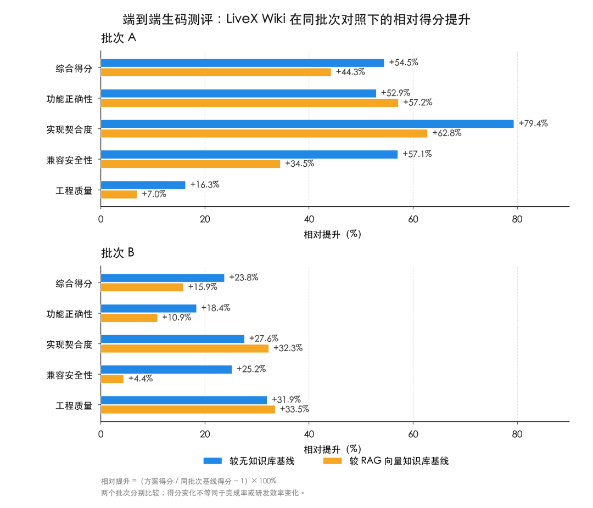
图中分别以同批次无知识库、RAG 向量知识库为基线，展示 LiveX Wiki 的相对提升。计算方式为“（方案得分 ÷ 基线得分 − 1）× 100%”，数值按原评测记录保留一位小数，不展示原始得分、需求数量与具体业务样本。
两批测评中，LiveX Wiki 的综合得分较无知识库基线分别相对提升约 54.5% 和 23.8%，较团队既有 RAG 向量知识库分别提升约 44.3% 和 15.9%。功能正确性、实现契合度、兼容安全性和工程质量也均呈正向变化。这支持了按业务场景组织知识、辅助 Agent 理解和实现需求的价值，从宏观视角验证了LiveX Wiki建设带来的收益与价值。
▐ 6.3 需求路由测评：区分知识覆盖与定位能力
需求路由测评同样从历史需求、技术方案与实际变更中构建输入和 GT，标注目标业务域、场景、仓库和核心链路。被测 Agent 只执行路由定位，测评器逐条比对四类目标集合，计算精确率、召回率和 F1。
先核对评测时有哪些场景，再看这些需求定位得怎样。 我们以需求为单位，将每条需求的 GT 目标场景与评测时的场景清单、文件身份核对：GT 全部已覆盖组指该需求的全部 GT 目标场景均已覆盖；GT 含未覆盖组指至少有一个 GT 目标场景未覆盖，这样可以区分知识覆盖缺口与已有知识的定位问题。
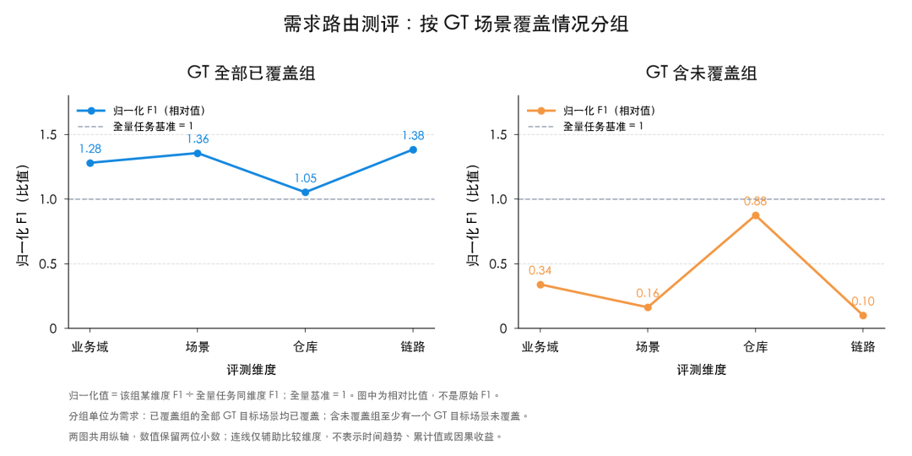
图中按归一化值 = 该组某维度 F1 ÷ 全量任务同维度 F1计算，分别将全量任务的各维度 F1 设为基准 1，结果保留两位小数。这些数值是相对比值，不是原始 F1，也不是百分比得分。 例如，1.28 表示该组该维度的 F1 约为全量基准的 1.28 倍。
通过需求路由测评结果，我们可以初步得出结论：在已覆盖场景上LiveX Wiki的知识定位准确率和召回率已提升显著，其中链路F1达到 1.38 : 0.10，验证了场景覆盖建设的投入收益。
▐ 6.4 结论：分数判断投入，轨迹指导改进
最终分数帮助判断是否值得继续投入，执行轨迹决定接下来改哪里。 我们沿需求理解、知识路由、链路核验、方案实现逐步检查，优先找最早的偏差。
| 存在的问题 | 改进策略 |
|---|---|
| 知识广度：目标场景知识未覆盖，或业务用语无法命中 | 针对性补充场景覆盖度，校准场景索引文件Frontmatter相关字段和别名 |
| 知识准确度：定位符失效，或地图与代码、平台不一致 | 完善优化对应知识的时效与自动维护和事实层证据关联能力 |
| 知识新鲜度：知识获取充分，但是与事实源不一致 | 完善优化知识自更新能力，通过先验事实源追溯与后验评测校准 |
| Agent行为：场景选对了，却还是用错或忽略了知识 | 建立在线和离线知识消费观测体系，针对性分析调优 |
| 评测噪音：同一测评批次产出评分不稳定，或 GT 有歧义 | 标注、评估规则与人工复核GT与评测结果，引入LLM辅助分析 |
后续计划通过关闭依赖展开、调整回源核验等受控对照，分离质量和成本的来源。每次修订落到具体场景、关系或消费步骤，并复跑受影响任务，让评测结果反过来指导建模、消费与维护。
写在最后：LiveX Wiki 的适用边界与局限性
▐ 值得复用的方法和边界
这条路线适合跨仓、跨端、持续变化且会反复被开发的业务。前期调查沉淀为场景后，后续任务能够复用路径，维护也有明确范围。我们沉淀了三项可迁移的方法：
- 以需求如何变化，决定知识如何划分。 先确定哪些入口、规则和依赖共同支撑一次业务行为，再选场景边界；按仓库或技术主题自动分组，需要额外补齐这一层。
- 复用已经理解的结构，重新确认当前事实。 业务地图帮助缩小调查范围，源码与运行平台决定本次任务的实现依据；知识版本与事实版本分别管理。
- 让生产、消费、维护和评测指向同一对象。 同一个场景承担路由、核验、责任与修订单位，评测失分也能落回具体场景和接口链，建设投入才可能积累。
局限也落在同一设计上：场景边界需要人参与，覆盖补齐需要投入；依赖图可能遗漏未建模关系，模型核验也依赖来源可达；Git 与 CI 提供可追溯性和确定性检查，并不能保证所有业务判断正确，所以必须引入人来为知识准确性负责与兜底。
把业务理解留下来，是为了让下一次变更有可复用的起点；让它持续接受事实核验，是为了使这个起点仍然可信。 接下来的建设将继续围绕场景覆盖、交付质量和维护成本展开，检验这套知识在业务持续变化之后，能否稳定帮助 Agent 作出有依据的实现决策。
References
- Retrieval-Augmented Generation for Knowledge-Intensive NLP Tasks：
https://arxiv.org/abs/2005.11401
- GraphRAG 官方文档：
https://microsoft.github.io/graphrag/
- LightRAG: Simple and Fast Retrieval-Augmented Generation
https://arxiv.org/abs/2410.05779
- PageIndex 项目说明：
https://github.com/VectifyAI/PageIndex/
- LLM Wiki 提案：
https://gist.github.com/karpathy/442a6bf555914893e9891c11519de94f
- Open Knowledge Format 规范：
https://github.com/GoogleCloudPlatform/knowledge-catalog/blob/main/okf/SPEC.md
- Palantir Ontology 核心概念：
https://www.palantir.com/docs/foundry/ontology/core-concepts
团队介绍
本文作者翎捷，来自淘天集团-直播互动团队。团队聚焦淘宝直播互动，以及点淘的互动体验、用户增长与用户运营等业务场景，持续探索 AI Native 的业务研发与工程实践。在研发侧，通过 AI 辅助研发、业务知识体系建设与 AI Friendly 工程基础设施，让 AI 更好地理解业务、参与研发，提升交付效率与质量；在业务侧，探索 AI 托管运营在直播场景中的落地，推动运营从人工执行走向AI智能决策与自动执行，助力降低经营成本、提升经营效率。
¤ 拓展阅读 ¤
归属：[[02-输入/按主题/AI与效率/_index|AI与效率]]